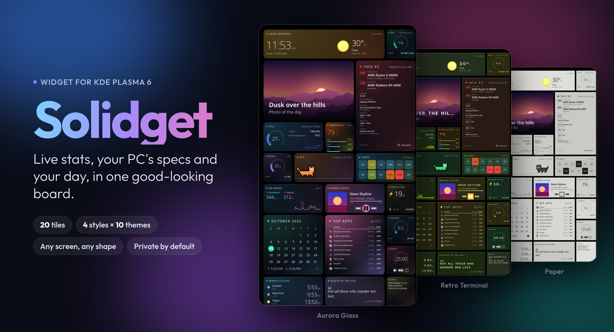
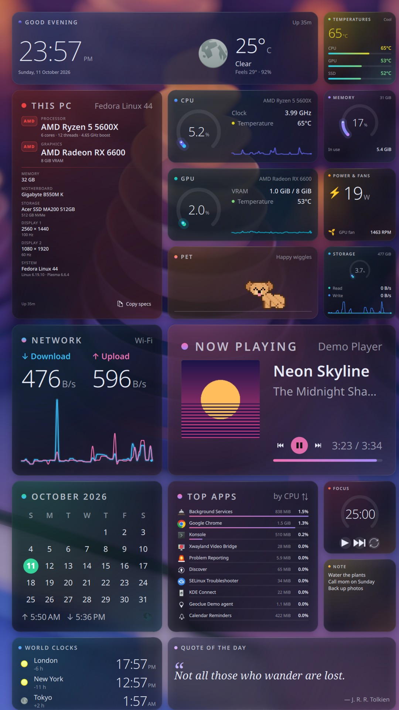
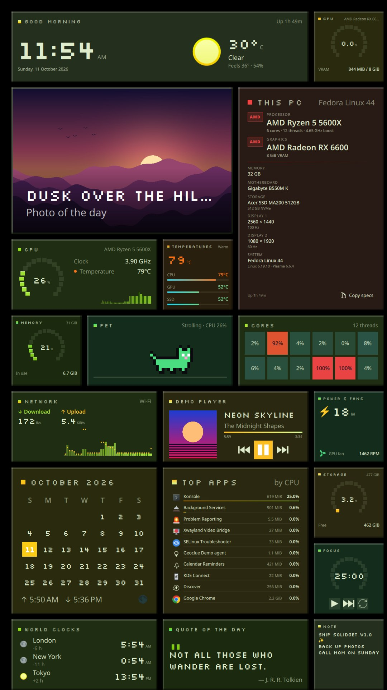
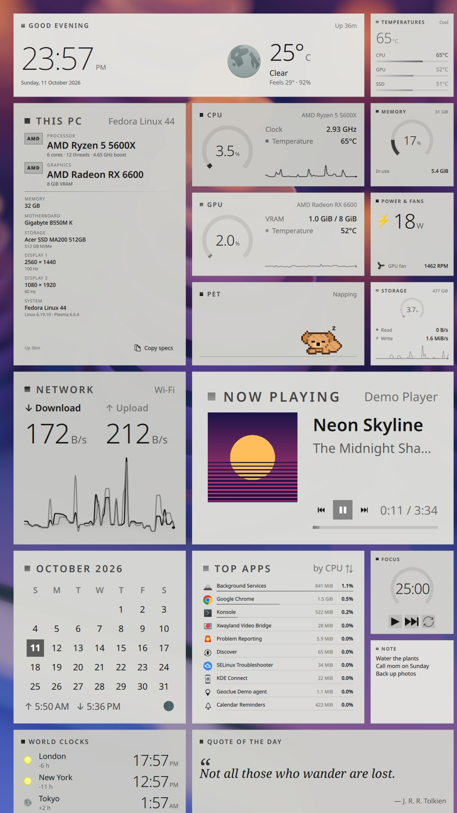

Live system stats, your PC's specs, and the little everyday things, all in one good-looking board.
Fedora, Kubuntu, Debian 13, openSUSE, Arch, Manjaro, KDE neon, Bazzite and more

Put it in a corner, down the side, or fill a spare monitor. It looks good in all of them.
CPU, GPU, memory, temperatures, network, storage, fans and top apps. Plus clock and weather, calendar, music, photo of the day, world clocks, focus timer, notes and quotes.
4 styles × 10 color themes, or one click for a ready-made look. It can also follow your Plasma colors.
Drag tiles, resize them, hide the ones you don't need. They stay exactly where you put them.
Your computer name, Wi-Fi name, IP and location are hidden, so screenshots are safe to share.
About 5% of one CPU core with every tile on. No background services, nothing to set up.
A pixel poodle (or cat) naps when your PC is calm, plays fetch when it's busy, and pants when it gets hot.
Three of the ready-made looks, on a portrait monitor.



Works on any Linux with KDE Plasma 6.
Right-click your desktop → Add Widgets… → Get New Widgets → Download New Plasma Widgets.
Search for Solidget and click Install. Updates arrive in Discover.
Drag Solidget from Add Widgets. Hover over it and click Settings to pick a look.
Prefer a file? Download it from the latest release and choose Install Widget From Local File.
Everything runs on your PC. A few tiles fetch public data, and only when they're shown. No accounts, no tracking.